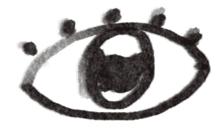

Visions 远见
I forecast the climate for growth.
我预判生长的气候。
Before the seed meets the dust, I read the frost of geopolitics and the drought of ideology — ensuring your brand takes root in fertile ground.
在种子落地之前，我洞察地缘政治的霜冻与意识形态的干旱——确保你的品牌在肥沃的土壤中扎根。